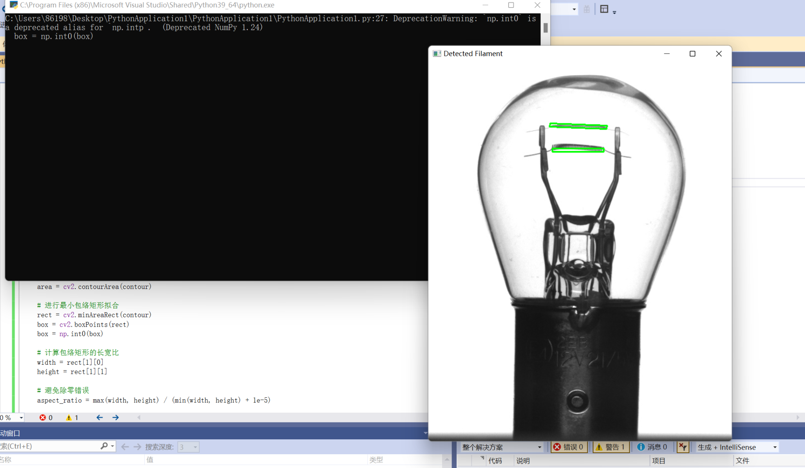
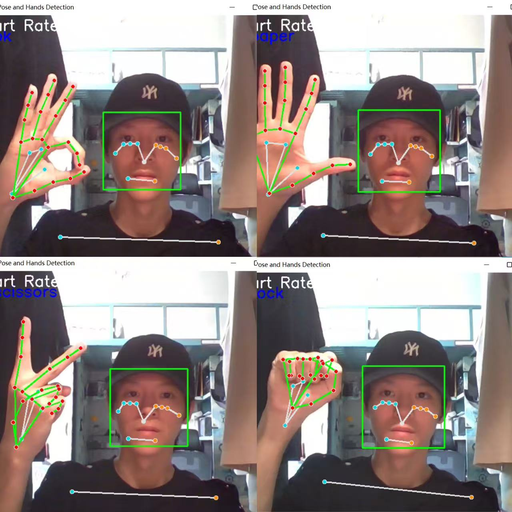
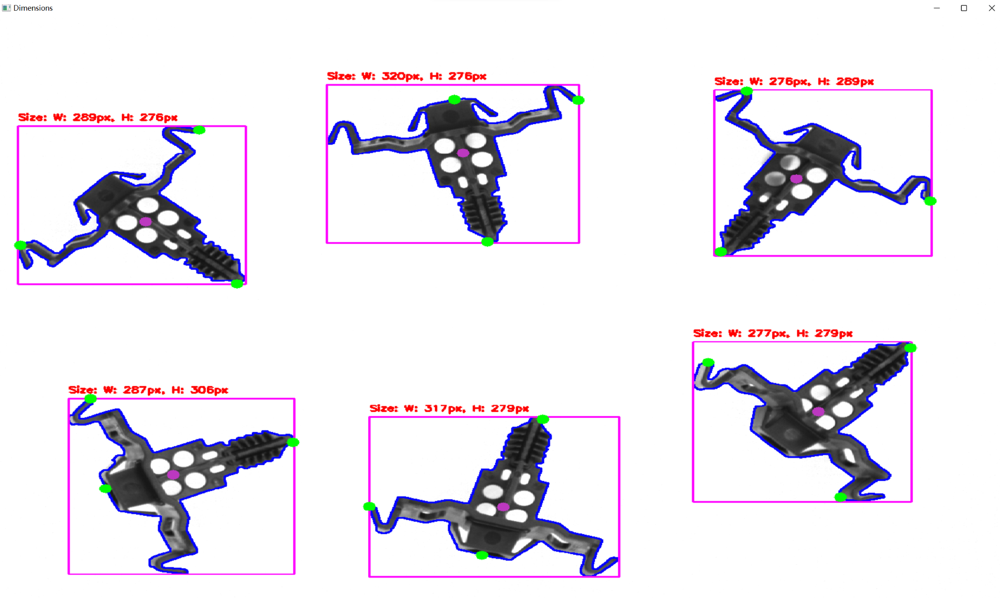
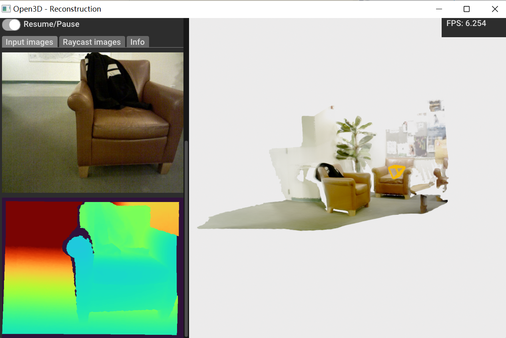

About Me
I am currently pursuing an MSc in Robotics at the University of Manchester, building on my undergraduate background in Artificial Intelligence (B.Eng., Tiangong University, 2021–2025).
My academic interests lie in intelligent control, machine learning, and robotic system design.
Looking ahead, I aim to develop advanced robotic systems that integrate perception, control, and AI for real-world applications.
I am particularly interested in autonomous systems, human–robot interaction, and intelligent manufacturing, and I aspire to contribute to innovative solutions that improve efficiency, safety, and quality of life.
Projects
Filament Detection using OpenCV
Implemented contour detection and filament recognition with Python and OpenCV, including bounding box fitting and aspect ratio analysis.

3D Rotation of Application Logos
Used Python to draw and rotate application logos (Chrome, TikTok, NetEase Music, Steam, etc.), demonstrating 2D transformation and visualization.

Hand Gesture Recognition with MediaPipe
Developed a real-time hand gesture recognition system (Rock, Paper, Scissors) using MediaPipe, detecting face and hand keypoints for human-computer interaction.

Object Dimension Measurement
Applied OpenCV for contour detection and bounding box measurement of mechanical components, calculating width and height in pixels for automated inspection.

3D Scene Reconstruction with Open3D
Processed RGB-D images with Open3D to build real-time 3D point cloud models, visualizing both depth maps and reconstructed scenes for robotics perception.
